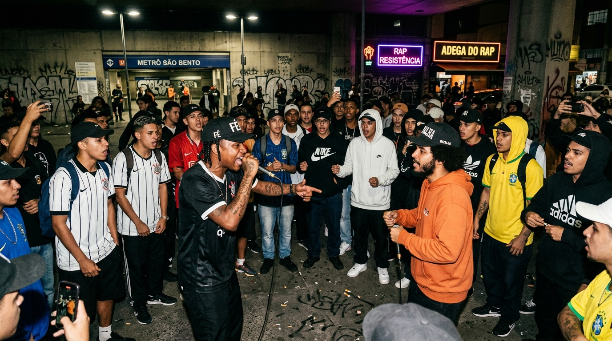

01
16 MCs sorteados na hora
Inscrição por ordem de chegada a partir das 18h30. Os 16 primeiros nomes entram na chave oficial de mata-mata sem favorecimento.
A voz da quebrada no mic aberto. Ritmo, ideologia periférica e improviso cru no asfalto da Sul.

Inscrição por ordem de chegada a partir das 18h30. Os 16 primeiros nomes entram na chave oficial de mata-mata sem favorecimento.
O microfone é território coletivo. Espaço para MCs da Zona Sul mandarem rimas de sangue ou conhecimento com respeito à raiz do hip-hop.
Cultura periférica não cobra catraca. O evento acontece no espaço público da estação com barulho, plateia ativa e júri popular.
A BDC não é espetáculo de vitrine. É batalha de fundamento, onde cada verso carrega a vivência, o peso e a resistência de quem vive a Zona Sul no dia a dia.